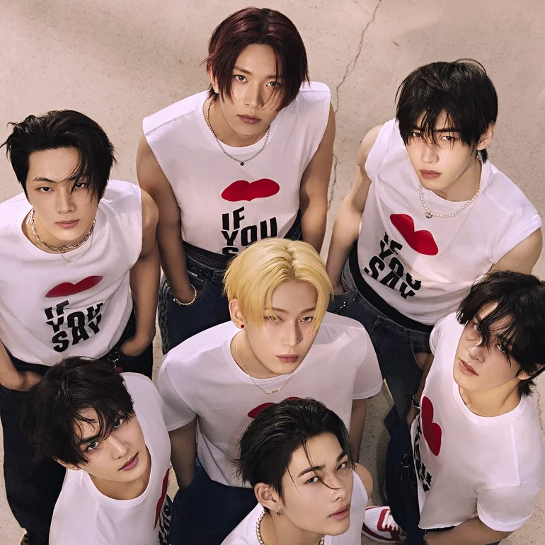
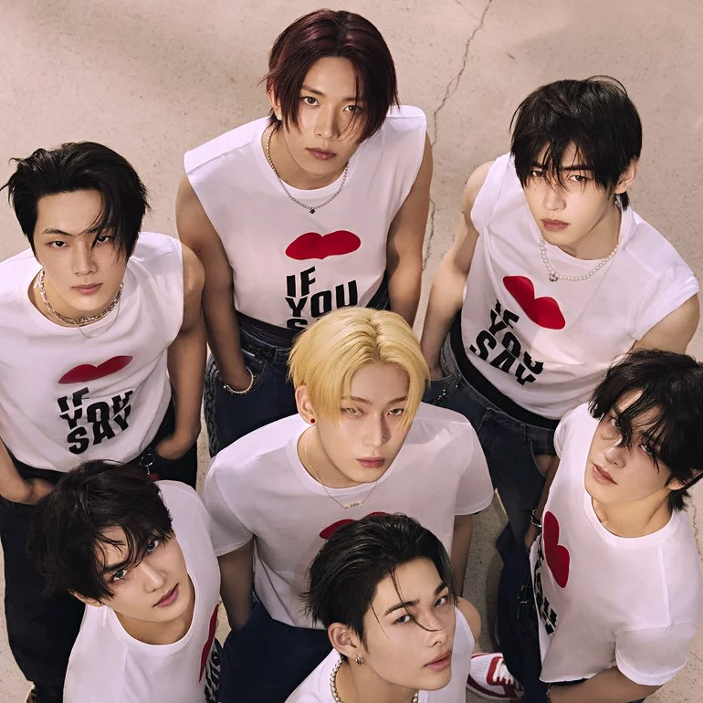

Sobre o ENHYPEN
O grupo ENHYPEN foi formado em 2020 através do reality show I-LAND, uma competição entre trainees
das
empresas CJ ENM e Big Hit Entertainment (atual Hybe Corporation). Em 18 de setembro de 2020, os
sete
membros finais foram revelados: Jungwon, Heeseung, Jay, Jake, Sunghoon, Sunoo e Ni-ki. Eles
debutaram
oficialmente em 30 de novembro de 2020 com o mini-álbum "BORDER: DAY ONE", cujo sucesso imediato
consolidou o grupo na indústria do K-pop.
O nome ENHYPEN reflete a ideia de conexão e crescimento, representado pelo hífen (-), e o desejo
do
grupo de conectar pessoas e culturas por meio da música. O nome do fandom, ENGENE, simboliza os
fãs como
parte essencial do crescimento do grupo, funcionando como o "motor" que os impulsiona.
Desde sua estreia, o ENHYPEN lançou uma série de álbuns com temáticas profundas. Em 2021, o
mini-álbum
"BORDER: CARNIVAL" trouxe reflexões sobre o impacto da fama e as emoções intensas que ela
provoca, com a
faixa "Drunk-Dazed" se tornando um grande sucesso. Em 2022, o grupo lançou "DIMENSION: DILEMMA",
abordando as complexidades das escolhas e tentações que vêm com o crescimento pessoal e
profissional.
Em 2023, com o álbum "MANIFESTO: DAY 1", o ENHYPEN afirmou sua independência artística,
explorando
questões de identidade e autoexpressão. Esse trabalho marcou um momento de maior maturidade na
trajetória do grupo.
Finalmente, em 2024, o ENHYPEN lançou "Romance: Untold" , um álbum que explora temas de
amor,
lealdade e
conexões emocionais, demonstrando o amadurecimento contínuo do grupo e recebendo ampla aclamação
dos fãs
e da crítica.
Ao longo dos anos, o ENHYPEN conquistou diversos prêmios e reconhecimento internacional,
solidificando
sua posição como um dos grupos mais influentes de sua geração no K-pop.
.
|
 

|